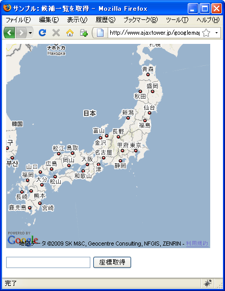
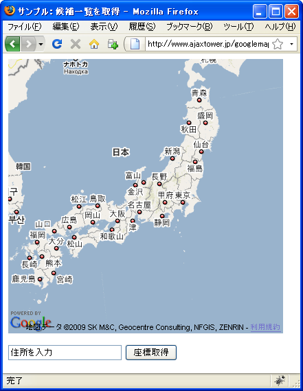
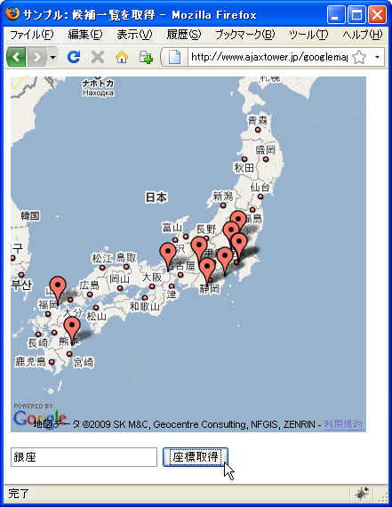
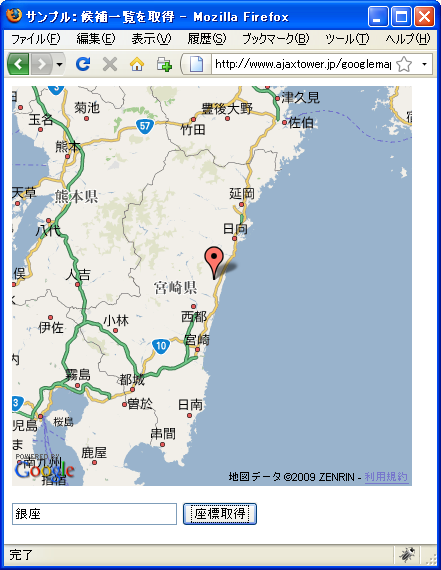
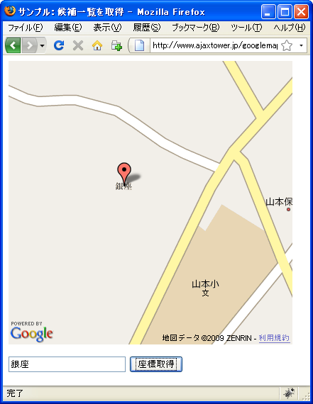

候補一覧を�得
getLatLngメソッドã�§ã�¯å¼•æ•°ã�«æŒ‡å®šã�—ã�Ÿä½�所ã�‹ã‚‰ä¸€ã�¤ã�®å€™è£œã‚’帰ã�—ã�¾ã�—ã�Ÿã�Œã€�指定ã�—ã�¦ä½�所ã�«ã‚ˆã�£ã�¦ã�¯è¤‡æ•°ã�®å€™è£œã�Œè¦‹ã�¤ã�‹ã‚‹å ´å�ˆã�Œã�‚ã‚Šã�¾ã�™ã€‚ã�“ã�“ã�§ã�¯å€™è£œã�®ä¸€è¦§ã‚’å…¨ã�¦å�–å¾—ã�™ã‚‹æ–¹æ³•ã‚’確èª�ã�—ã�¾ã�™ã€‚
指定���所�ら候補�一覧を�得�る��GClientGeocoderクラス�用��れ��るgetLocationsメソッドを使���。
getLocations(query:String|GLatLng, callback:function)
ã�“ã�®ãƒ¡ã‚½ãƒƒãƒ‰ã�§ã�¯ã€�リクエストã�Œ Google ジオコーディング サービスã�«é€�ä¿¡ã�•ã‚Œã€�指定 ã�® query ã�®è§£æ��ã�¨æŒ‡å®š callback ã�§ã�®å¿œç”ã�®å‡¦ç�†ã�Œä¾�é ¼ã�•ã‚Œã�¾ã�™ã€‚ ã�“ã�®ã‚¸ã‚ªã‚³ãƒ¼ãƒ‡ã‚£ãƒ³ã‚° サービスを利用ã�™ã‚‹ã�«ã�¯ã€�ã�“ã�®ãƒ¡ã‚½ãƒƒãƒ‰ã‚’呼ã�³å‡ºã�—ã�¦ query をジ オコードã�«æ¸¡ã�—ã�¾ã�™ã€‚ä½�所表記å�¯èƒ½ã�ª String ã�¨ã�—ã�¦ã‚¯ã‚¨ãƒªã�Œæ��ä¾›ã�•ã‚Œã‚‹å ´å�ˆã€�サービス ã�¯æ¨™æº–çš„ã�ªã‚¸ã‚ªã‚³ãƒ¼ãƒ‰ã�®å‡¦ç�†ã‚’è¡Œã�„ã�¾ã�™ã€‚ã�Ÿã� ã�—ã€�query ã�« GLatLng ã�Œå�«ã�¾ã‚Œã‚‹å ´å�ˆã€� サービスã�¯é€†ã‚¸ã‚ªã‚³ãƒ¼ãƒ‰ã�®å‡¦ç�†ã‚’è¡Œã�„ã�¾ã�™ã€‚ ã�“ã�®ãƒ¡ã‚½ãƒƒãƒ‰ã�¯ Google サーãƒ�ーã�¸ã�®å‘¼ã�³å‡ºã�—ã‚’å¿…è¦�ã�¨ã�™ã‚‹ã�®ã�§ã€�å¿œç”ã�®å‡¦ç�†ã�«ã�¯ callback メソッドも渡ã�™å¿…è¦�ã�Œã�‚ã‚Šã�¾ã�™ã€‚ã�“ã�®å¿œç”ã�«ã�¯ Status コードã�Œå�«ã�¾ã‚Œã€�æ£å¸¸ã�«å‡¦ç�†ã�•ã‚Œ ã‚‹ã�¨ã€�1 ã�¤ã�¾ã�Ÿã�¯è¤‡æ•°ã�® Placemark オブジェクトもå�«ã�¾ã‚Œã�¾ã�™ã€‚GClientGeocoder.getLatLng メソッドã�¨ã�¯ç•°ã�ªã‚Šã€�コールãƒ�ック関数ã�¯ Status フィールドを調ã�¹ã�¦ã€�失敗ã�®ç�†ç”±ã‚’特 定ã�™ã‚‹å ´å�ˆã�Œã�‚ã‚Šã�¾ã�™ã€‚
1番目ã�®å¼•æ•°ã�«åº§æ¨™ã‚’調ã�¹ã�Ÿã�„ä½�所を文å—列ã�§æŒ‡å®šã�—ã�¦ä¸‹ã�•ã�„(座標を指定ã�—ã�Ÿå ´å�ˆã�„ã�¯ãƒªãƒ�ースジオコーディングã�«ã�ªã‚Šã�¾ã�™ã€‚ã�“ã�¡ã‚‰ã�¯æ¬¡ã�®ãƒšãƒ¼ã‚¸ã�§ç¢ºèª�ã�—ã�¾ã�™)。サーãƒ�ã�‹ã‚‰ã�®å¿œç”ã�«ã�¯æ™‚é–“ã�Œã�‹ã�‹ã‚‹å ´å�ˆã�Œã�‚ã‚Šã�¾ã�™ã�®ã�§ã€�2番目ã�®å¼•æ•°ã�«ã‚³ãƒ¼ãƒ«ãƒ�ック関数を指定ã�—ã�¾ã�™ã€‚
コールãƒ�ック関数ã�«ã�¯è¤‡æ•°ã�®å€™è£œåœ°ã�«é–¢ã�™ã‚‹æƒ…å ±ã�Œå�«ã�¾ã‚Œã‚‹ã‚ªãƒ–ジェクトã�Œå¼•æ•°ã�¨ã�—ã�¦æ¸¡ã�•ã‚Œã�¦ã��ã�¾ã�™ã€‚
実際��次�よ��記述���。
var map = new GMap2(document.getElementById("map"));
map.setCenter(new GLatLng(35.658517, 139.745493), 15);
var geocoder = new GClientGeocoder();
geocoder.getLocations("�京都�代田区", markAddress);
function markAddress(obj){
if (obj.Status.code == G_GEO_SUCCESS){
/* ... */
}else{
alert("データ��得�失敗����");
}
}
上記ã�§ã�¯å�–å¾—ã�—ã�Ÿã‚ªãƒ–ジェクトã�®ä¸ã�®ã‚¹ãƒ†ãƒ¼ã‚¿ã‚¹ã‚³ãƒ¼ãƒ‰ã‚’調ã�¹ã�¦æˆ�功ã� ã�£ã�Ÿã�‹ã�©ã�†ã�‹ã‚’判定ã�—ã�¦ã�„ã�¾ã�™ã€‚
オブジェクトã�«ã�©ã�®ã‚ˆã�†ã�ªãƒ—ãƒãƒ‘ティã�Œå�«ã�¾ã‚Œã�¦ã�„ã‚‹ã�®ã�‹ã�¯å¾Œã�®ã‚µãƒ³ãƒ—ルをå�‚ç…§ã�—ã�¦ä¸‹ã�•ã�„。
サンプルプãƒã‚°ãƒ©ãƒ
ã�§ã�¯è©¦ã�—ã�¦ã�¿ã�¾ã�™ã€‚ã�¾ã�šã�¯å€™è£œåœ°ã�Œè¦‹ã�¤ã�‹ã�£ã�Ÿå ´å�ˆã�«ã�©ã�®ã‚ˆã�†ã�ªã‚ªãƒ–ジェクトã�Œè¿”ã�•ã‚Œã�¦ã��ã‚‹ã�®ã�‹ã‚’確èª�ã�™ã‚‹ã�Ÿã‚�ã�®ã‚µãƒ³ãƒ—ルã�§ã�™ã€‚
var map;
var geocoder;
function initialize() {
if (GBrowserIsCompatible()) {
map = new GMap2(document.getElementById("map_canvas"));
map.setCenter(new GLatLng(36.004673,137.351074), 5);
geocoder = new GClientGeocoder();
}
}
function getAddress() {
var address = document.getElementById("address").value;
geocoder.getLocations(address, markAddress);
}
function markAddress(obj) {
if (obj.Status.code == G_GEO_SUCCESS){
var names = check(obj, "");
alert(names);
}
}
function check(obj, str){
var names = "";
for (var name in obj){
if (typeof obj[name] == "object"){
names += check(obj[name], str + name + ".") + "¥n";
}else{
names += str + name + "=" + obj[name] + "¥n";
}
}
return names;
}
<!DOCTYPE html "-//W3C//DTD XHTML 1.0 Strict//EN"
"http://www.w3.org/TR/xhtml1/DTD/xhtml1-strict.dtd">
<html xmlns="http://www.w3.org/1999/xhtml">
<head>
<meta http-equiv="content-type" content="text/html; charset=UTF-8"/>
<title>サンプル：候補一覧を�得</title>
<script src="http://maps.google.com/maps?file=api&v=2&key=(key)&sensor=false"
type="text/javascript" charset="utf-8"></script>
<script src="./js/code2_1.js" type="text/javascript"></script>
</head>
<body onload="initialize()" onunload="GUnload()">
<div id="map_canvas" style="width: 400px; height: 400px"></div>
<form>
<p>
<input type="text" id="address" size="30" value="�所を入力" />
<input type="button" id="addressbtn" value="座標�得" onclick="getAddress()" />
</p>
</form>
</body>
</html>
��ブラウザ�上記�URLを見����。

地図下ã�®ãƒ†ã‚ストボックスã�«"æ�±å±±"ã�¨å…¥åŠ›ã�—ã�¦ã€Œåº§æ¨™å�–å¾—ã€�ボタンを押ã�—ã�¦ä¸‹ã�•ã�„。ダイアãƒã‚°ã�Œé–‹ã��次ã�®ã‚ˆã�†ã�«è¡¨ç¤ºã�•ã‚Œã�¾ã�™ã€‚
name=�山 Status.code=200 Status.request=geocode Placemark.0.id=p1 Placemark.0.address=日本京都府京都市�山区 Placemark.0.AddressDetails.Accuracy=4 Placemark.0.AddressDetails.Country.AdministrativeArea.AdministrativeAreaName=京都府 Placemark.0.AddressDetails.Country.AdministrativeArea.Locality.LocalityName=京都市�山区 Placemark.0.AddressDetails.Country.CountryName=日本 Placemark.0.AddressDetails.Country.CountryNameCode=JP Placemark.0.ExtendedData.LatLonBox.north=35.016626 Placemark.0.ExtendedData.LatLonBox.south=34.9800649 Placemark.0.ExtendedData.LatLonBox.east=135.8072006 Placemark.0.ExtendedData.LatLonBox.west=135.743171 Placemark.0.Point.coordinates.0=135.7751858 Placemark.0.Point.coordinates.1=34.9983475 Placemark.0.Point.coordinates.2=0 Placemark.1.id=p2 Placemark.1.address=�山 Placemark.1.AddressDetails.Accuracy=0 Placemark.1.AddressDetails.AddressLine.0=�山 Placemark.1.ExtendedData.LatLonBox.north=34.5624744 Placemark.1.ExtendedData.LatLonBox.south=34.5561792 Placemark.1.ExtendedData.LatLonBox.east=135.6332695 Placemark.1.ExtendedData.LatLonBox.west=135.6269743 Placemark.1.Point.coordinates.0=135.6301219 Placemark.1.Point.coordinates.1=34.5593268 Placemark.1.Point.coordinates.2=0 __shared=undefined
ã�¾ã�šStatus.codeを確èª�ã�™ã‚‹ã�“ã�¨ã�§æ£å¸¸ã�«çµ�æ�œã�Œè¿”ã�£ã�Ÿã�®ã�‹ã�©ã�†ã�‹ã‚’確èª�ã�§ã��ã�¾ã�™ã€‚値ã�Œ200ã� ã�£ã�Ÿå ´å�ˆã�«ã�¯ã€Œã‚¨ãƒ©ãƒ¼ã�¯ç™ºç”Ÿã�—ã�¾ã�›ã‚“ã�§ã�—ã�Ÿã€‚ä½�所ã�¯æ£å¸¸ã�«è§£æ��ã�•ã‚Œã€�ジオコードã�Œè¿”ã�•ã‚Œã�¾ã�—ã�Ÿã€‚ã€�を表ã�—ã�¦ã�„ã�¾ã�™ã€‚ã��れ以外ã�®å ´å�ˆã�«ã�¯ä½•ã‚‰ã�‹ã�®ã‚¨ãƒ©ãƒ¼ã�Œç™ºç”Ÿã�—ã�¦ã�„ã�¾ã�™ã€‚
Placemarkプãƒãƒ‘ティã�«å�«ã�¾ã‚Œã‚‹ã‚ªãƒ–ジェクトã�®ä¸€ã�¤ä¸€ã�¤ã�Œå€™è£œåœ°ã�¨ã�ªã‚Šã�¾ã�™ã€‚今å›�ã�®å ´å�ˆã�§ã�‚ã‚Œã�°2ã�¤ã�®å€™è£œã�Œè¦‹ã�¤ã�‹ã�£ã�Ÿã�“ã�¨ã�«ã�ªã‚Šã�¾ã�™ã€‚
Placemarkプãƒãƒ‘ティã�®ä¸ã�®addrssプãƒãƒ‘ティã�®å€¤ã�Œä¸€è‡´ã�—ã�Ÿä½�所を表ã�—ã�¦ã�„ã�¾ã�™ã€‚ã�¾ã�ŸAddressDetails.Accuracyプãƒãƒ‘ティã�®å€¤ã�§ã�©ã�®ç¨‹åº¦ã�®ç²¾åº¦ã�§ä¸€è‡´ã�—ã�Ÿã�®ã�‹ã�Œåˆ†ã�‹ã‚Šã�¾ã�™ã€‚精度ã�®ä¸€è¦§ã�¯æ¬¡ã�®é€šã‚Šã�§ã�™ã€‚
0 ä¸�æ˜�ã�ªå ´æ‰€ã€‚ 1 国レベルã�®ç²¾åº¦ã€‚ 2 地域 (å·�ã€�çœ�ã€�県ã�ªã�©) レベルã�®ç²¾åº¦ã€‚ 3 準地域 (郡ã€�市区町æ�‘ã�ªã�©) レベルã�®ç²¾åº¦ã€‚ 4 町 (番地) レベルã�®ç²¾åº¦ã€‚ 5 郵便番å�·ãƒ¬ãƒ™ãƒ«ã�®ç²¾åº¦ã€‚ 6 通りレベルã�®ç²¾åº¦ã€‚ 7 交差点レベルã�®ç²¾åº¦ã€‚ 8 ä½�所レベルã�®ç²¾åº¦ã€‚ 9 建物（建物å��ã€�ä¸�動産å��ã€�ショッピングセンターã�ªã�©ï¼‰ãƒ¬ãƒ™ãƒ«ã�®ç²¾åº¦ã€‚
最åˆ�ã�®å€™è£œã�¯AddressDetails.Accuracyプãƒãƒ‘ティã�®å€¤ã�Œ4ã�§ã�™ã�®ã�§ã€Œç”ºãƒ¬ãƒ™ãƒ«ã�®ç²¾åº¦ã€�ã�§æŒ‡å®šã�—ã�Ÿä½�所ã�«ä¸€è‡´ã�—ã�Ÿã�“ã�¨ã‚’表ã�—ã�¾ã�™ã€‚
座標ã�«ã�¤ã�„ã�¦ã�¯Point.coordinates.0プãƒãƒ‘ティã�®å€¤ã�Œç·¯åº¦ã‚’表ã�—ã€�Point.coordinates.1プãƒãƒ‘ティã�®å€¤ã�ŒçµŒåº¦ã‚’表ã�—ã�¾ã�™ã€‚
ã�“れらã�®ãƒ—ãƒãƒ‘ティã�®å€¤ã�‹ã‚‰å¿…è¦�ã�ªæƒ…å ±ã‚’å�–å¾—ã�—ã�¦ã��ã� ã�•ã�„。
サンプルプãƒã‚°ãƒ©ãƒ
��試�����。今度�見����候補地�全��ーカーを立�るよ�������。
var map;
var geocoder;
function initialize() {
if (GBrowserIsCompatible()) {
map = new GMap2(document.getElementById("map_canvas"));
map.setCenter(new GLatLng(36.004673,137.351074), 5);
geocoder = new GClientGeocoder();
}
}
function getAddress() {
var address = document.getElementById("address").value;
geocoder.getLocations(address, markAddress);
}
function markAddress(obj){
if (obj.Status.code == G_GEO_SUCCESS){
for (var i = 0; i < obj.Placemark.length; i++){
var lat = obj.Placemark[i].Point.coordinates[1];
var lng = obj.Placemark[i].Point.coordinates[0];
var point = new GLatLng(lat, lng)
var marker = new GMarker(point);
map.addOverlay(marker);
}
}else{
alert("データを�得����ん���");
}
}
<!DOCTYPE html "-//W3C//DTD XHTML 1.0 Strict//EN"
"http://www.w3.org/TR/xhtml1/DTD/xhtml1-strict.dtd">
<html xmlns="http://www.w3.org/1999/xhtml">
<head>
<meta http-equiv="content-type" content="text/html; charset=UTF-8"/>
<title>サンプル：候補一覧を�得</title>
<script src="http://maps.google.com/maps?file=api&v=2&key=(key)&sensor=false"
type="text/javascript" charset="utf-8"></script>
<script src="./js/code2_2.js" type="text/javascript"></script>
</head>
<body onload="initialize()" onunload="GUnload()">
<div id="map_canvas" style="width: 400px; height: 400px"></div>
<form>
<p>
<input type="text" id="address" size="30" value="�所を入力" />
<input type="button" id="addressbtn" value="座標�得" onclick="getAddress()" />
</p>
</form>
</body>
</html>
��ブラウザ�上記�URLを見����。

地図下ã�®ãƒ†ã‚ストボックスã�«"銀座"ã�¨å…¥åŠ›ã�—ã�¦ã€Œåº§æ¨™å�–å¾—ã€�ボタンを押ã�—ã�¦ä¸‹ã�•ã�„。

数多ã��ã�®ãƒ�ーカーã�Œè¡¨ç¤ºã�•ã‚Œã�¾ã�—ã�Ÿã€‚ã�§ã�¯ã�“ã�®ä¸ã�®å®®å´�県ã�«ã�‚ã‚‹ãƒ�ーカーã�®ç®‡æ‰€ã‚’ズームインã�—ã�¦ã�¿ã�¾ã�™ã€‚


��りズームイン���る�「銀座����表記��れ���。
( Written by Tatsuo Ikura )

著者 / TATSUO IKURA
åˆ�心者ï½�ä¸ç´šè€…ã�®æ–¹ã‚’対象ã�¨ã�—ã�Ÿãƒ—ãƒã‚°ãƒ©ãƒŸãƒ³ã‚°æ–¹æ³•ã‚„開発環境ã�®æ§‹ç¯‰ã�®è§£èª¬ã‚’è¡Œã�†ã‚µã‚¤ãƒˆã�®é�‹å–¶ã‚’è¡Œã�£ã�¦ã�„ã�¾ã�™ã€‚